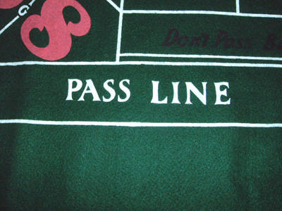

This might not be the easiest bet for a newbie to learn, but it's the best place to start. Craps is a game of points. There is one person who rolls the dice. He's called the shooter You'll often see the shooter in television commercials for casinos (the person with the impish smile and two girls in shiny dresses to either side). The goal of shooter is to make as many points as possible.
So first off, what's a point? Points are the numbers 4, 5, 6, 8, 9, and 10. Points are made by the shooter rolling the dice and the two numbers adding up together to one of the points.
Ok, straightforward so far. Now here's the wrinkle. Craps is played in rounds, where a round is ended when the shooter gives the dice to the next player in line. There are two phases to a round, the come-out phase and the point phase.
The goal of the come-out phase is to establish a point. That is, the player is trying to roll one of the numbers above that we have established as points (4, 5, 6, 8, 9 or 10).
 You may ask yourself, what about the other numbers? namely 2, 3, 7, 11, and 12? These numbers are not points. They can all be good or bad depending on the bet. In the come-out phase, the a player must bet on the pass line or the do not pass line.
Let's say the shooter has put $10 down on the pass line. There are 3 outcomes from any roll when we are in the come-out phase and the shooter has money bet on the pass line.
So let's do a sample roll. Imagine we had bet $10. After you click 'Roll', you will see your dice value and also the result of the bet.
Phase:Come-Out | Puck is 'Off'
You rolled a(n) :Once a come-out number has been established, the dealer's puck is flipped to on. At this point, the shooter's job is to hit the same number again that he established as the point.
During the point phase, players can make bets on numbers hitting before a 7 occurs. When a 7 occurs, all bets are wiped off the table, and the dice passes to the next player who then becomes the shooter
Let's keep things simple and explore betting just the pass line. When you put your money down, you have a 8/36 chance of winning immediately (6 combinations to make 7 and 2 combinations to make 11). You also have 4/36 chance to lose immediately (this is 1 combination for 2, 2 combinations for 3 and 1 combination for 12).
The attentive math student will see that 8/36 = 2/9 = 22% chance of winning immidiately. Losing immediately is 4/36 = 1/9 = 11%.
The remaining 66% of the time, the game will entire the points phase, that is 2 out of every 3 rolls from the come-out phase should enter the points phase. Once we enter the points phase, the only roll that will win money for the player is one in which his point comes up.
Since each number has different odds of winning, a player is allowed to bet odds that will be payed in addition to his pass-line bet. We'll keep things simple for now, and just assume the player will get paid 1:1 for his pass-line bet
So if our shooter rolls a 6, on every roll he has a 5/36 chance of winning. He also has a 6/36 chance of losing (since rolling a 7 will end the round). The other 25 rolls are safe. They don't end the round, but also don't make the shooter money if he just bets the pass round.
Let's run an experiment. Say our shooter starts out with $100. Let's graph his money if he only bets the pass-line. We'll go until he runs out of money.